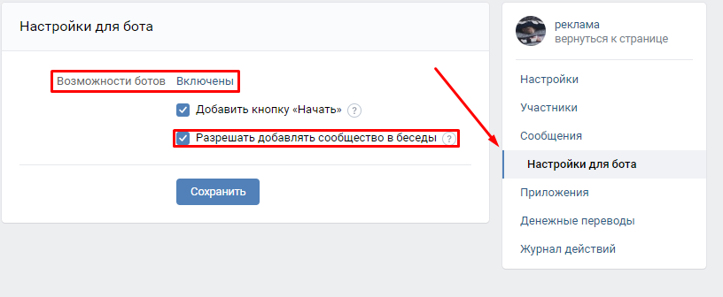
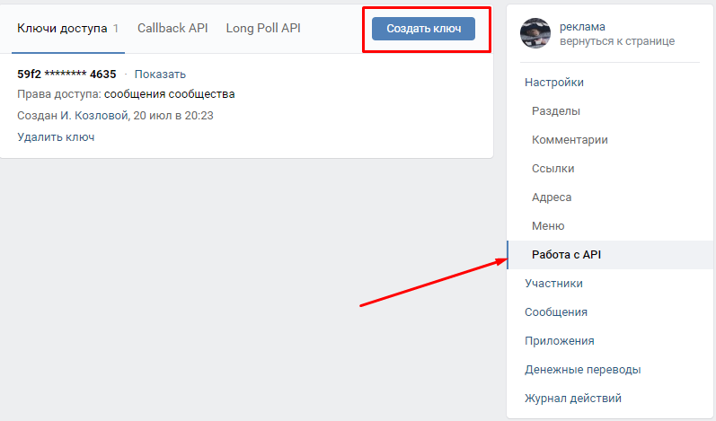
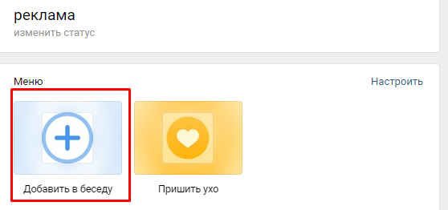
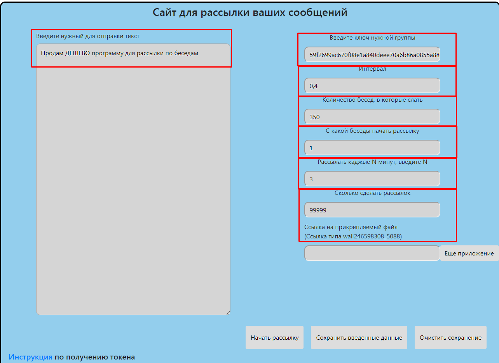

Эта инструкция для тех кто пользуется моим сайтом для рассылки сообщений по беседам.
Перед тем как задавать мне вопросы прочтите инструкцию до конца.
- Вам нужно создать паблик, от имени которого вы будете слать.
- Нужно настроить его как бота (Разрешить сообщения, добавить возможность добавления паблика в беседы), сделать это можно в настройках.
(Управление>Сообщения>Настройки для бота)

- Теперь нужно получить сервисный ключ, по которому программа будет получать доступ к сообщениям
(Управление>Настройки>Работа с API> кнопка создать ключ, выбираем доступ к сообщениям)

- Теперь важно не забыть добавить бота в беседы, для этого будет кнопка в меню паблика (на основной странице)

- Заполняем поле "Введите нужный для отправки текст" сюда соответсвенно пишем текст, который вы хотите разослать
- Следом запоняем поле "Введите ключ нужной группы" тут указываем ключ, который мы получили в пункте 3
- "Интервал" это то, с какой частотой сообщения будут рассылаться по беседам (рекомендую от 0.3 до 0.9)
- "Количество бесед, в которые слать" число бесед в которые вы хотите отправить сообщения
- "С какой беседы начать рассылку" номер беседы, с которой начинать рассылку
- "Рассылать каджые N минут, введите N" число минут между рассылками
- "Сколько сделать рассылок" - общее количество рассылок
- "Ссылка на прикрепляемый файл" копируете ссылку удаляете лишние символы, чтобы было как в примере

- Чтобы постоянно не заполнять все данные можете нажать кнопку "Сохранить введенные данные", они будут сохранены у вас на устройстве и никто не получит к ним доступ
- Если данные введены неверно их можно удалить нажав на кнопку "Очистить сохранение"